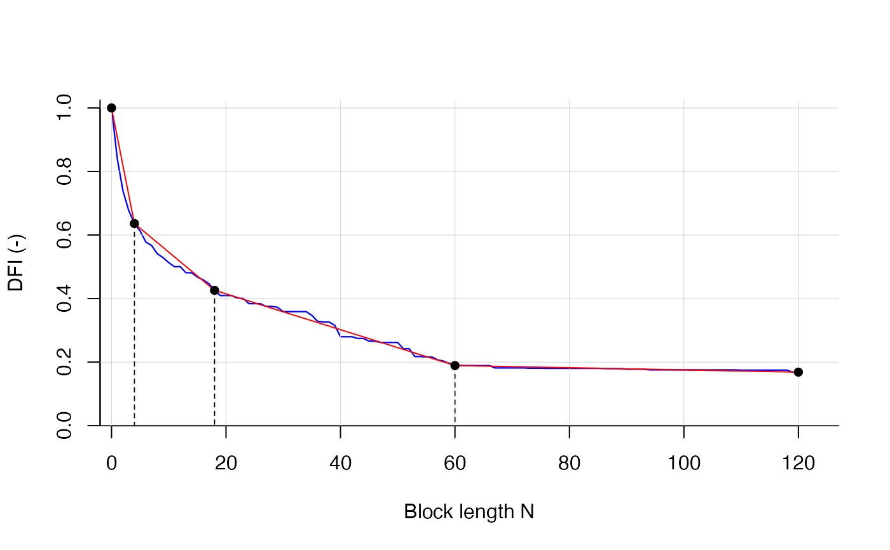

Estimates n breakpoints in the DFI curve.
DFI values are compared against n+1 piecewise linear segments and the minimization of the
residuals (between linear segments and DFI curve). Several parameters can be customized.
If q_obs is given in daily temporal resolution then also n can be interpreted as delay in days
for different contributions (default).
Arguments
- dfi
numeric, a vector with the DFI values between 1 and 0, dummy data dfi_example can be used.
- n_bp
numeric, How many breakpoints (1, 2, 3) should be estimated (default = 2)? If
n_bp = 3calculation time could be longer if alsonmaxis high.nmaxcould be estimated with find_nmax. For testing alson_bp = 4is possible Seeexperimentalsetting.- bp_mingap
numeric, smallest interval between two breakpoints (default = 5).
- bp_min
numeric,
bp_min+1 is minimum allowed breakpoint position (default = 0).- bp_max
numeric,
bp_max-1 is maximum allowed breakpoint position.- nmax
numeric parameter to truncate the tailing of the CDC (i.e. the length of
dfivector). Note,nmaxshould not be confused withbp_max(i.e. maximum breakpoint position).- of_weights
vector with two elements, first is weight of the RMSE, second is weight of the MAE. Default is c(0.5, 0.5), i.e. equal weights. Sum of vector must be 1. To switch of one measure use
c(1, 0)orc(0,1). With the weighting more or less focus could be given to the upper parts of the DFI curve (i.e. when block lengthnfor separation is between 1 and 10).- desc
logical, if
TRUE(recommended) DFI values are converted to be monotonically decreasing withcummin()logical, if
TRUEbest breakpoint estimates during calculation are printed (debug mode)- plotting
logical, if
TRUEthe DFI curve, piecewise linear segments and the breakpoints are plotted withplot()whit DFI curve in blue and linear segments in red.- experimental
logical, if
TRUEfour breakpoints can be estimated.
Value
Returns a list with 3 elements.
- breakpoints
estimates for the n breakpoints with names
bp_n- bias
value of the objective function, default:
OF = 1/2 RMSE + 1/2 MAE, where OF is to be minimized.- rel_contr
Relative streamflow contributions between
bp_min, the breakpoints andbp_max, e.g. 2 breakpoints lead to 3 relative contributions, 3 breakpoints lead to 4 relative contributions. The firstrel_contr-value is the fastest contribution to streamflow, the lastrel_contr-value is the slowest contribution to streamflow. All contributions add up to 1.
References
Stoelzle, M., Schuetz, T., Weiler, M., Stahl, K., & Tallaksen, L. M. (2020). Beyond binary baseflow separation: a delayed-flow index for multiple streamflow contributions. Hydrology and Earth System Sciences, 24(2), 849-867.
Examples
# use dfi_example as an DFI vector with 121 values
find_bps(dfi_example, n_bp = 3, bp_max = 90, plotting = TRUE)
#> Calculating breakpoints...Done.
#>

#> $bps_position
#> bp_1 bp_2 bp_3
#> 4 18 60
#>
#> $bias
#> [1] 0.01066672
#>
#> $rel_contr
#> contr_1 contr_2 contr_3 contr_4
#> 0.3638711 0.2101886 0.2368266 0.1891137
#>